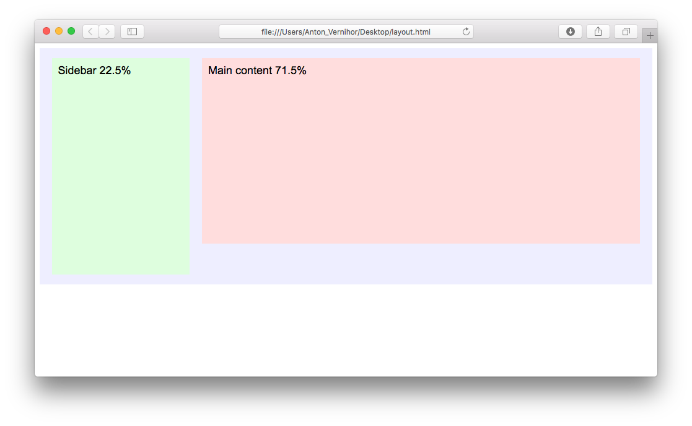
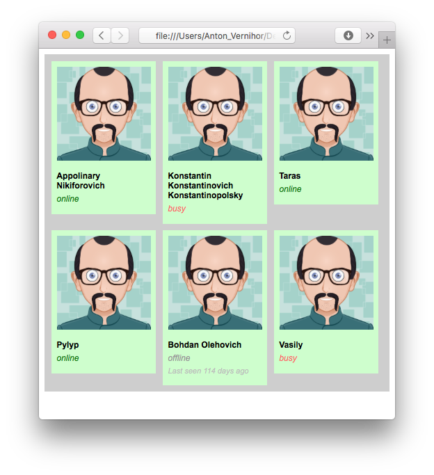
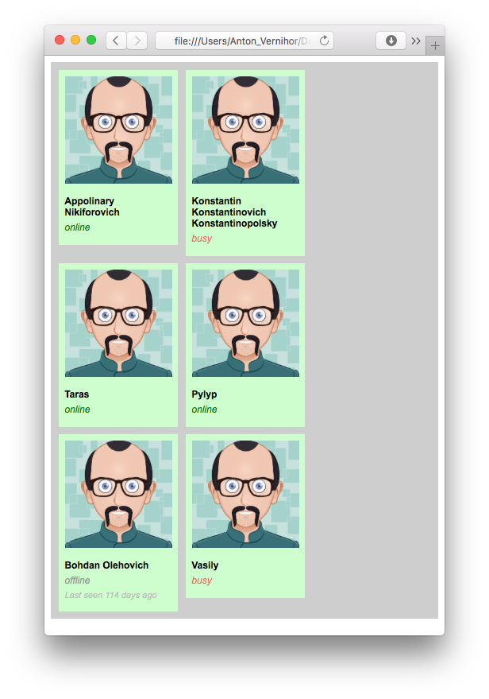
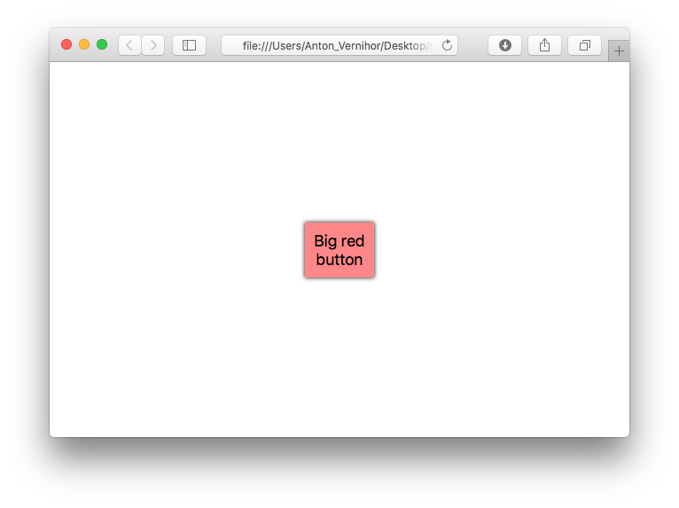
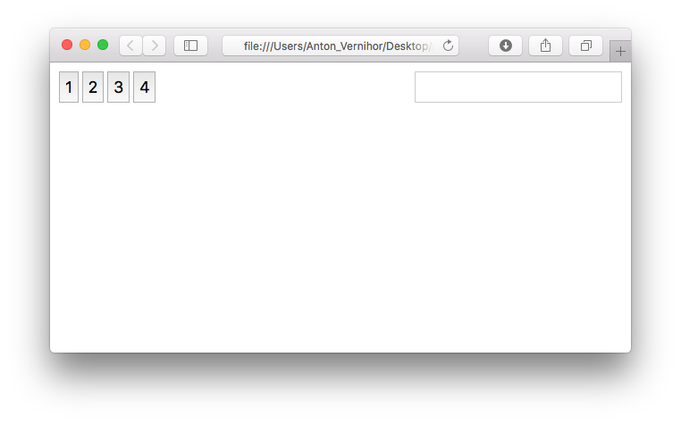
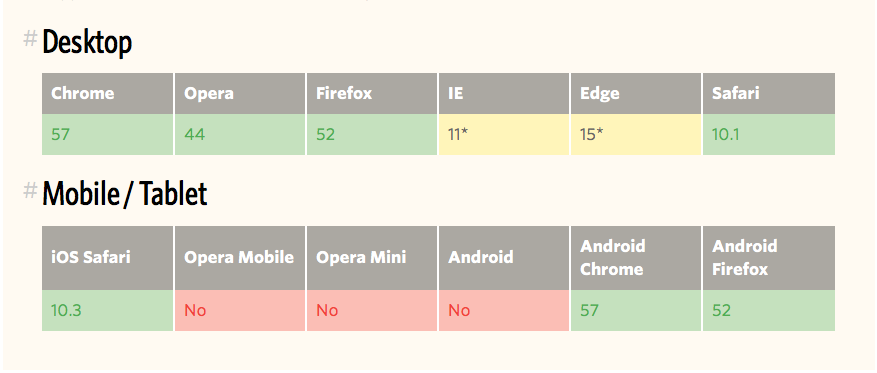

What is RWD?
History
The book
Basic principles
Other principles
Fixed layout

Fluid layout

Float-based layout markup
<div class="page">
<div class="main">
Main content 71.5%
</div>
<div class="aside">
Sidebar 22.5%
</div>
</div>Float-based layout styles
.page {
overflow: auto; /* better use clearfix */
}
.main {
float: right;
width: 71.5%;
margin: 0 2% 0 0;
}
.aside {
float: left;
width: 22.5%;
margin: 0 0 0 2%;
}Float-based layout
Inline block tiles markup
<div class="container">
<div class="tile">
…
</div><div class="tile">
…
</div><div class="tile">
…
</div><div class="tile">
…
</div>
</div>Inline block styles
.container {
padding: 0 5px 10px;
}
.tile {
display: inline-block;
width: 150px;
min-height: 150px;
margin: 10px 5px 0;
vertical-align: top;
}
Inline block styles
Inline block styles
Flexbox basics
Container
flex-directionflex-wrapjustify-contentalign-itemsalign-content
Flexbox basics
Items
orderflex-growflex-shrinkflex-basisalign-self
Flexbox example styles
html {
height: 100%;
}
body {
margin: 0;
min-height: 100%;
display: flex;
justify-content: center;
align-items: center;
}Flexbox centered content
Flexbox toolbar markup
<div class="toolbar">
<button>1</button>
<button>2</button>
<button>3</button>
<button>4</button>
<input type="text">
</div>Flexbox toolbar styles
.toolbar {
display: flex;
justify-content: flex-start;
}
.toolbar input {
margin-left: auto;
}Flexbox toolbar
CSS grid
css-tricks.com/snippets/css/complete-guide-grid CSS grid markup
<body>
<div class="header">
header
</div>
<div class="main">
content
</div>
<div class="sidebar">
sidebar
</div>
<div class="footer">
footer
</div>
</body>CSS Grid styles
html { height: 100%; }
body {
margin: 0;
min-height: 100%;
display: grid;
grid-template-columns: 25% 25% 25% 25%;
grid-template-rows: 70px auto 50px;
grid-template-areas: "header header header header"
"sidebar main main main"
"footer footer footer footer";
}
.header { grid-area: header; }
.main { grid-area: main; }
.sidebar { grid-area: sidebar; }
.footer { grid-area: footer; }CSS Grid + flexbox
.main {
grid-area: main;
display: flex;
justify-content: center;
align-items: center;
}Responsive images
Responsive images easy way
img {
max-width: 100%;
}Responsive images with placeholder
css
.image { max-width: 100%; }
.image__image { position: absolute;
top: 0; left: 0;
width: 100%; }HTML
<div class="image" style="width:500px">
<div class="image__ratio" style="padding-top:50%"></div>
<img src="image.png" alt="" class="image__image">
</div>IMG tag responsive
<img
src="image/example.jpg"
srcset="image/example-portrait.jpg 350w, image/example_landscape.jpg 650w"
sizes="(max-width: 600px) 300px, (min-width: 600px) 600px"
alt="">We can't use percent in sizes attribute.
Picture tag
<picture>
<source srcset="logo-wide.png" media="(min-width: 600px)">
<img src="logo-narrow.png" alt="">
</picture>type— Type of embedded resourcesrcset— Images to use in different situations (e.g. high-resolution displays, small monitors, etc)sizes— Image sizes for different page layoutsmedia— Applicable media
Responsive images support
Font icons
fontawesome.io
Static CSS or source preprocessor files, CDN
<link rel="stylesheet"
href="path/to/font-awesome/css/font-awesome.min.css">
…
<i class="fa fa-spinner fa-spin fa-3x"></i>SVG
<img src="image.svg" alt="">background-image: url(image.svg);<object
type="image/svg+xml" data="image.svg">
<img src="fallback.png">
</object><svg width="50" height="25">…</svg>Media queries
Media detection
<link rel="stylesheet" href="global.css" media="all">
<link rel="stylesheet" href="main.css" media="screen">
<link rel="stylesheet" href="paper.css" media="print">@media print {
body {
font-family: Times New Roman, serif;
}
}@import url("fineprint.css") print;Media types
- all
- braille
- embossed
- handheld
- projection
- screen
- speech
- tty
- tv
Media queries
@media screen { ... }@media screen and max-width(720px) { ... }@media only screen and max-width(720px) { ... }Features
- [min-|max-]width
- [min-|max-]height
- orientation
- [min-|max-]aspect-ratio
- [min-|max-]color
- [min-|max-]color-index
- [min-|max-]monochrome
- [min-|max-]resolution
- scan
- grid
Choose image
body {
text-align: center;
}
picture img {
max-width: 100%;
}<picture>
<source srcset="giraffe.jpg" media="(orientation: portrait)">
<source srcset="dachshund.jpg" media="(orientation: landscape)">
<img src="cat.jpg" alt="">
</picture>Switch layout
<meta name="viewport"
content="width=device-width,
initial-scale=1">Best practices
- Graceful degradation / progressive enhancement
- Mobile first